早上十時從求禮口火車站出發, 把整條蟾津江櫻花路從南至北走了一遍, 接著從蟾津江櫻花路北面出入口離開, 穿過田野間的小路、櫻花怒放的高速公路、橫躺蟾津江兩岸的文尺橋, 於下午三時四十分抵達求禮公用公交客運站, 五小時多的行程, 四周盡是燦爛櫻花, 真是大滿足, 不枉此行。
按原定計劃, 接著是從求禮公用公交客運站乘巴士往花開櫻花路, 車程不遠, 約半小時。但因為走完整條蟾津江櫻花路後, 已經萬分滿足, 腦袋不可能容納更多櫻花影像, 便決定取消, 而今天求禮郡的賞櫻行程也宣佈完滿結束了, 接著是乘巴士返回順天市。

設計古色古香的求禮公用公交客運站。
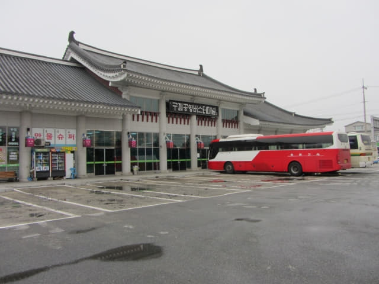
接著走進巴士站一樓大堂, 買了兩張往順天的車票, 每位是 4,200 韓元。按出發前準備的巴士時刻表, 下一班巴士是下午 16:25, 但售票員在車票的時間欄內寫上了 4:00。經過這旅程, 發覺現在 Naver Map 的資料很多時候都不準確的, 只可作參考。也難怪的, 如果要保持所有資料準確, 需要大量人手, 也需要很多方面的配合。
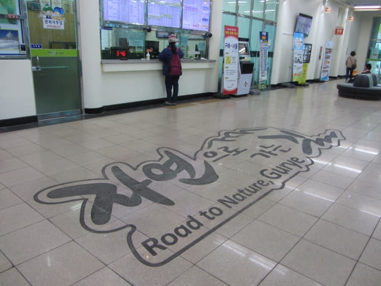
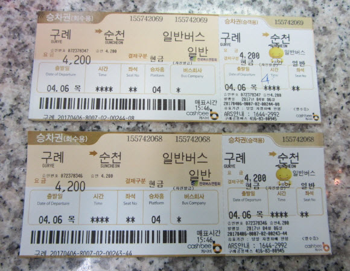
離開車還有約十五分鐘, 便在車站內四處參觀。
求禮公用公交客運站發車時刻表。
求禮公用公交客運站大堂。除了舒適外, 佈置也十分古雅。
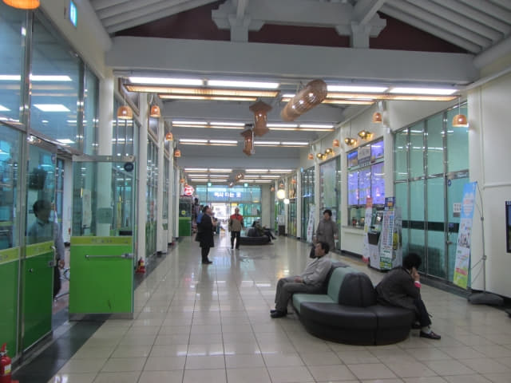
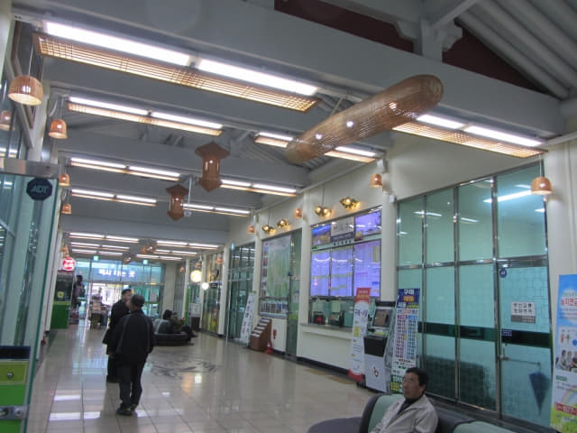
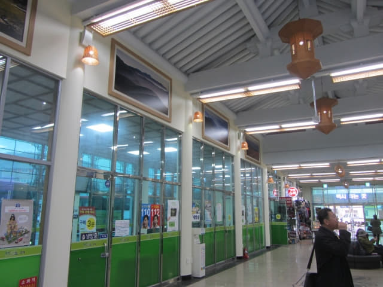
又是指紋識別密碼的置物箱。
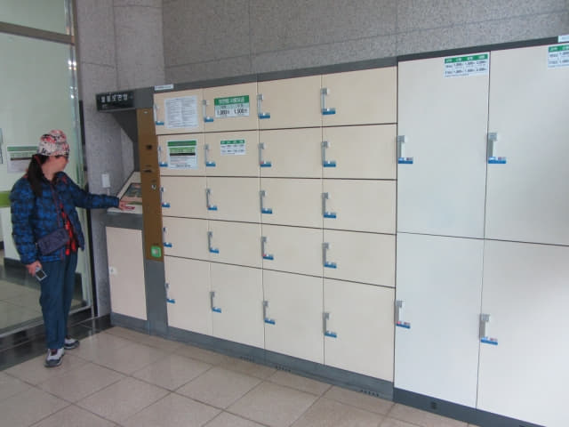
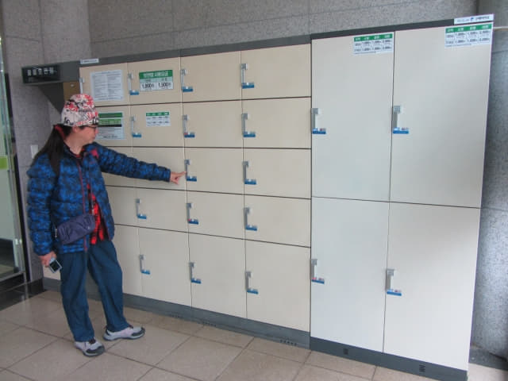
登車月台的標示牌, 有英文的! 不懂韓文也不用怕! Suncheon (順天 순천)是在4號月台上車。
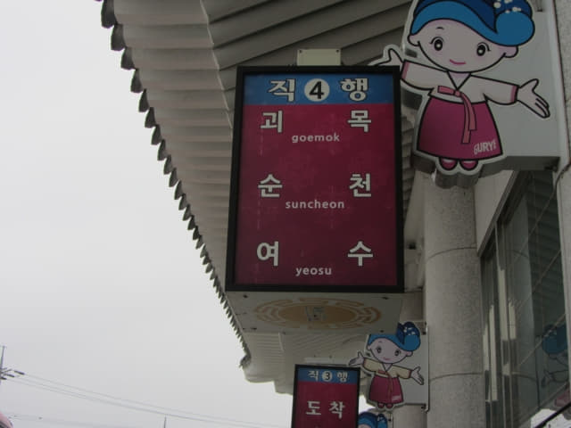
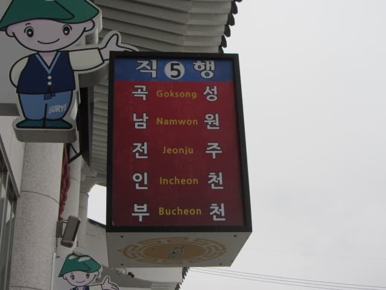
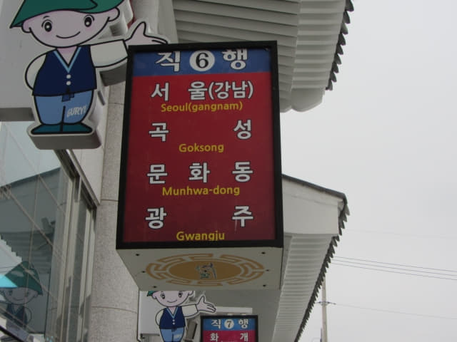
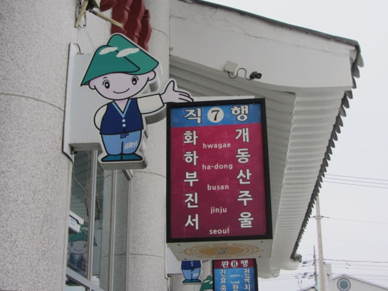
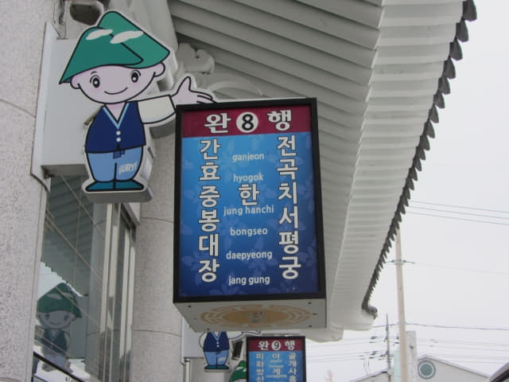
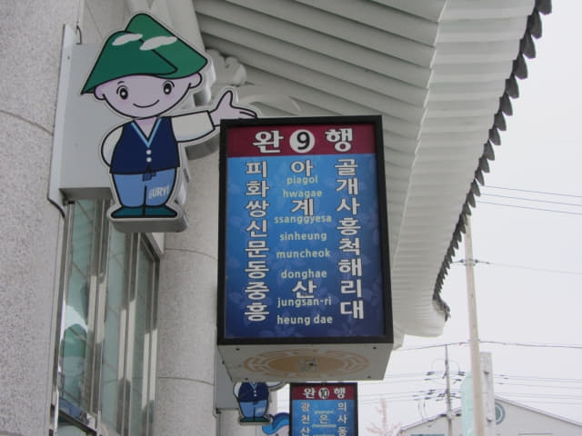
如果往求禮山茱萸村 (구례 산수유마을), 可以在10號月台乘往山洞面 (산동면 Sandong) 的市內巴士, 於 중동或하위마을下車, 車程約四十分鐘。我們當初也有計劃往求禮山茱萸村的, 只是太遲, 大部份山茱花已凋謝, 留待有機會再去吧!
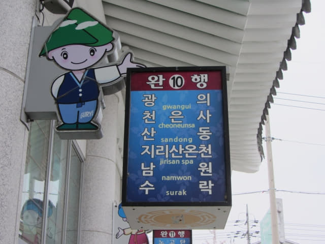
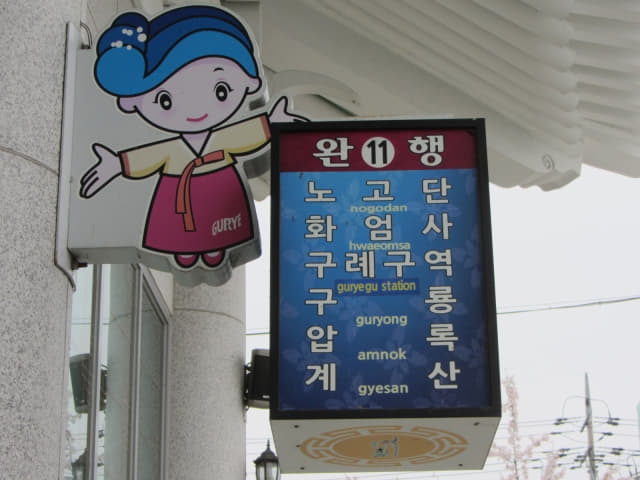
往順天 (순천) 的巴士於下午三時五十分駛來4號月台停靠。
「喂~~~ 上車前先對對車頭目的地的符號。」
第一個符號: 人T曲……. 對了, 是 「순」! 第二個符號: 一大字沒頂….右卜……下曲………………..對了, 是「 천」!
「是往順天的!」
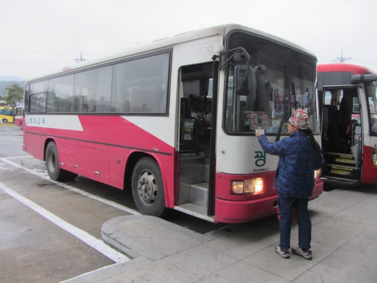
巴士的終點站原來是麗水(여수), 順天只是中途站。
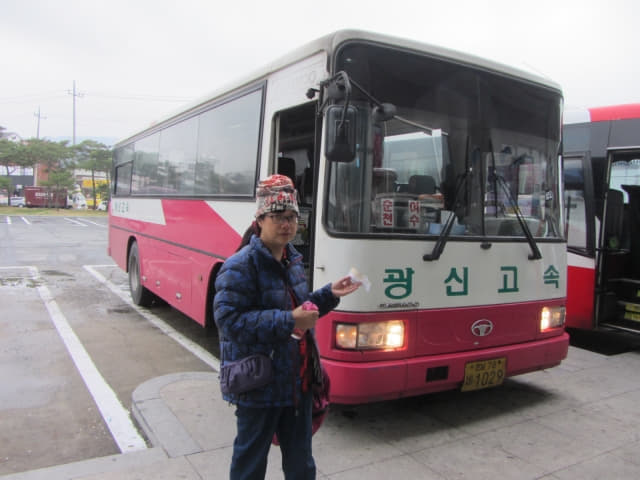
登上了巴士, 只有我們和另外一位乘客, 幾乎包車, 十分舒適。
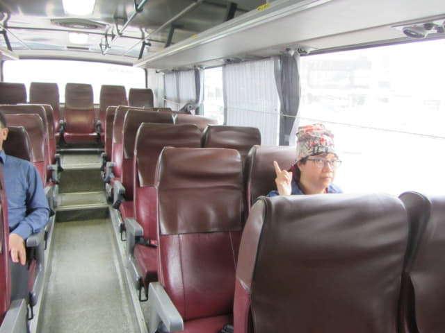
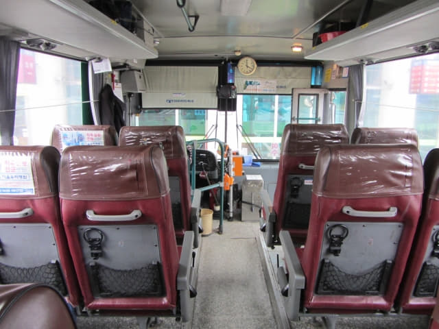
順天綜合巴士客運站
巴士準時於下午四時駛離求禮公用公交客運站, 正式結束了這求禮賞櫻大滿足行程。沿途交通十分暢通, 巴士於下午四時四十五分便抵達順天綜合巴士客運站。
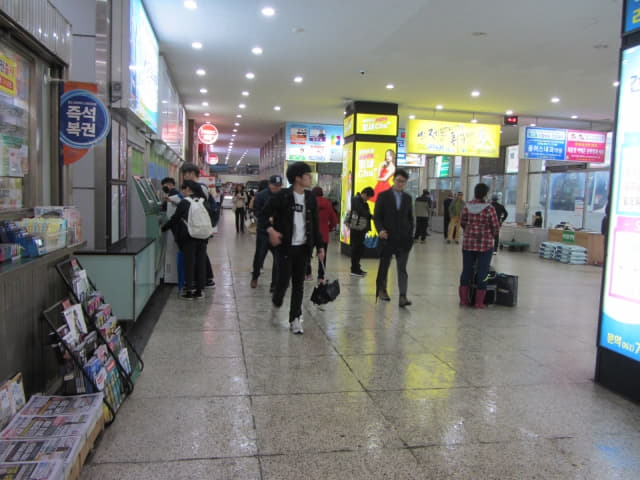

{kind=link}
{kind=link}
{kind=link}